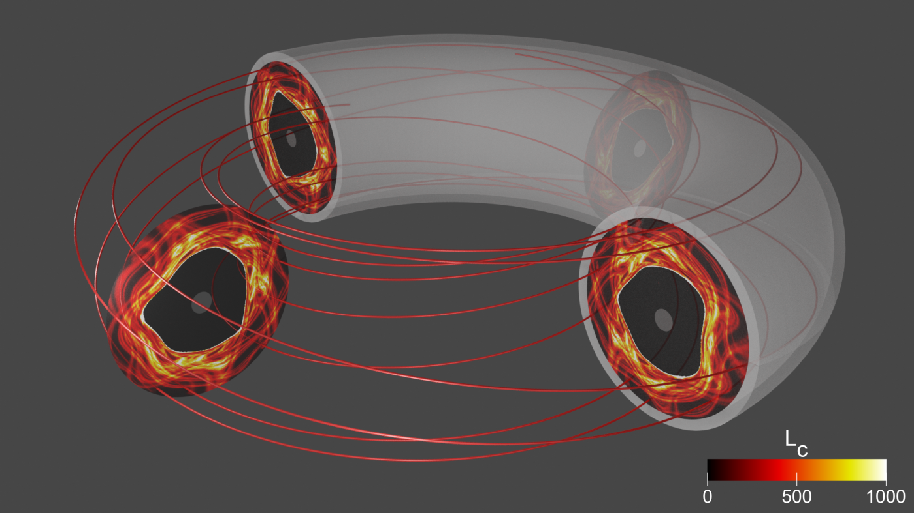

3D Gyrokinetic Simulation Studies on Thermal Quench
Highlight by Min-Gu Yoo (PPPL), Weixing Wang (PPPL), Edward Startsev (PPPL), and Xian-Zhu Tang (LANL)
Overview
The novel approaches of the TDS project, such as 3D magnetic topology analysis and the global gyrokinetic simulation by the GTS code, uncovered the collisionless plasma transport mechanisms during the thermal quench in the presence of open stochastic magnetic field lines connected to the wall boundary. Here, we highlight the complex 3D magnetic topology can be understood with two key concepts: the connection length $L_c$ and the effective magnetic mirror ratio $M_{eff}$. The newly developed generalized delta-f particle scheme enabled much more efficient global gyrokinetic simulations of thermal quench phenomena, leading to novel understanding of 3D plasma dynamics including the important electron kinetic physics.
Details of thermal quench physics can be found in Min-Gu Yoo, et al., Nuclear Fusion, 61 (12) (2021).
Result
 Destructive magnetic perturbations can create open magnetic field lines that randomly wander inside the tokamak and eventually hit wall boundaries. The red line shows the 3D trajectory of an example field line approximately 400 meters long. Each field line can have a significantly different trajectory. The colors of the four circular planes show the complex 3D structure of field line lengths, consisting of shorter (black) and longer (yellow) regions.
The 3D structure of the effective magnetic mirror ratio $M_{eff}$ in the presence of open stochastic magnetic fields. The black line shows an example open magnetic field line. Red and blue colors represent regions of magnetic wells ($M_{eff} > 1$) and magnetic hills ($M_{eff} < 1$), respectively. Charged particles can be trapped in the magnetic well region by the magnetic mirror force.
The motion of test electrons in the presence of open magnetic field lines: (top left) R-Z cylindrical coordinates, (top right) velocity coordinates, and (bottom) spatial coordinate versus magnetic potential energy along the field line. The blue particle is the passing electron exiting towards the right wall boundary, while the red and green particles are trapped electrons by the magnetic mirror force before hitting the wall boundary.
The temporal evolution of (left) electron density and (right) electrostatic potential in the presence of open stochastic magnetic fields during the thermal quench. Upper figures show the case where the $\mathbf{E}\times\mathbf{B}$ drift motion is ignored, whereas lower figures show the case where the ExB drift motion is included.
Paper: Min-Gu Yoo, et al., Nuclear Fusion 61(12) (2021)
Invited talks: 5th AAPPS-DPP (2021) and 63rd APS-DPP (2021)
Particle simulation of two-stream instability with three different weight schemes: (left) full-f, (middle) generalized delta-f, and (right) typical delta-f. Upper and lower figures show the motion of electron markers and the evolution of the total electron distribution function in the phase-space ($x-v$), respectively. Whereas the typical delta-f scheme (right) fails after a short time, the newly developed generalized delta-f scheme (middle) successfully simulates the same result as the full-f (left) does.